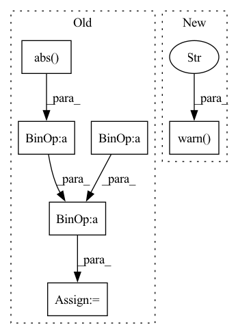

Pattern ID :10117

Before Change
raise ValueError("3-D or 4-D input is accepted, but given {}.".format(n_dims))
angle_mixture, angle_input = torch.angle(mixture), torch.angle(input)
angle = angle_mixture - angle_input
mask = (torch.abs(input) / (torch.abs(mixture) + eps)) * torch.cos(angle)
return mask
After Change
return mask
def phase_sensitive_mask(input, eps=EPS):
warnings.warn("Use compute_phase_sensitive_mask instead.", DeprecationWarning)
mask = compute_phase_sensitive_mask(input, eps=eps)
return mask
def ideal_complex_mask(input, eps=EPS):
In pattern: SUPERPATTERN
Frequency: 3
Non-data size: 6
Instances
Fragment ID: 35888803
Project Name: tky823/dnn-based_source_separation
Commit Name: 9aedd6277f88a4e88fe2d40fe96af536eb28674b
Time: 2021-10-08
Author: 40362510+tky823@users.noreply.github.com
File Name: src/algorithm/frequency_mask.py
M Class Name: AnonimousClass
N Class Name: AnonimousClass
M Method Name: phase_sensitive_mask(2)
N Method Name: phase_sensitive_mask(2)
M Parent Class:
N Parent Class:
M File Name: src/algorithm/frequency_mask.py
N File Name: src/algorithm/frequency_mask.py
M Start Line: 127
M End Line: 139
N Start Line: 187
N End Line: 188
'>
Before Change
mask <torch.Tensor>: Nonnegative tensor with shape of (n_sources, n_bins, n_frames) or (batch_size, n_sources, n_bins, n_frames)
if torch.is_complex(input):
input = torch.abs(input)
n_dims = input.dim()
power = input**(2 / domain) // (n_sources, n_bins, n_frames) or (batch_size, n_sources, n_bins, n_frames)
if n_dims == 3:
norm = power.sum(dim=0, keepdim=True) // (1, n_bins, n_frames)
elif n_dims == 4:
norm = power.sum(dim=1, keepdim=True) // (batch_size, 1, n_bins, n_frames)
else:
raise ValueError("Not support {}-dimension".format(n_dims))
mask = power / (norm + eps)
return mask
After Change
return mask
def wiener_filter_mask(input, domain=1, eps=EPS):
warnings.warn("Use compute_wiener_filter_mask instead.", DeprecationWarning)
mask = compute_wiener_filter_mask(input, domain=domain, eps=eps)
return mask
def ideal_amplitude_mask(input, eps=EPS):
'>
Fragment ID: 35888801
Project Name: tky823/dnn-based_source_separation
Commit Name: 9aedd6277f88a4e88fe2d40fe96af536eb28674b
Time: 2021-10-08
Author: 40362510+tky823@users.noreply.github.com
File Name: src/algorithm/frequency_mask.py
M Class Name: AnonimousClass
N Class Name: AnonimousClass
M Method Name: wiener_filter_mask(3)
N Method Name: wiener_filter_mask(3)
M Parent Class:
N Parent Class:
M File Name: src/algorithm/frequency_mask.py
N File Name: src/algorithm/frequency_mask.py
M Start Line: 79
M End Line: 92
N Start Line: 177
N End Line: 178
'>
Before Change
raise ValueError("3-D or 4-D input is accepted, but given {}.".format(n_dims))
angle = torch.angle(mixture)
denominator = (torch.abs(mixture) + eps) * torch.exp(1j * angle)
mask = input / denominator
return mask
After Change
return mask
def ideal_complex_mask(input, eps=EPS):
warnings.warn("Use compute_ideal_complex_mask instead.", DeprecationWarning)
mask = compute_ideal_complex_mask(input, eps=eps)
return mask
def multichannel_wiener_filter(mixture, estimated_sources_amplitude, iteration=1, channels_first=True, eps=EPS):
'>
Fragment ID: 35888816
Project Name: tky823/dnn-based_source_separation
Commit Name: 9aedd6277f88a4e88fe2d40fe96af536eb28674b
Time: 2021-10-08
Author: 40362510+tky823@users.noreply.github.com
File Name: src/algorithm/frequency_mask.py
M Class Name: AnonimousClass
N Class Name: AnonimousClass
M Method Name: ideal_complex_mask(2)
N Method Name: ideal_complex_mask(2)
M Parent Class:
N Parent Class:
M File Name: src/algorithm/frequency_mask.py
N File Name: src/algorithm/frequency_mask.py
M Start Line: 150
M End Line: 161
N Start Line: 192
N End Line: 193